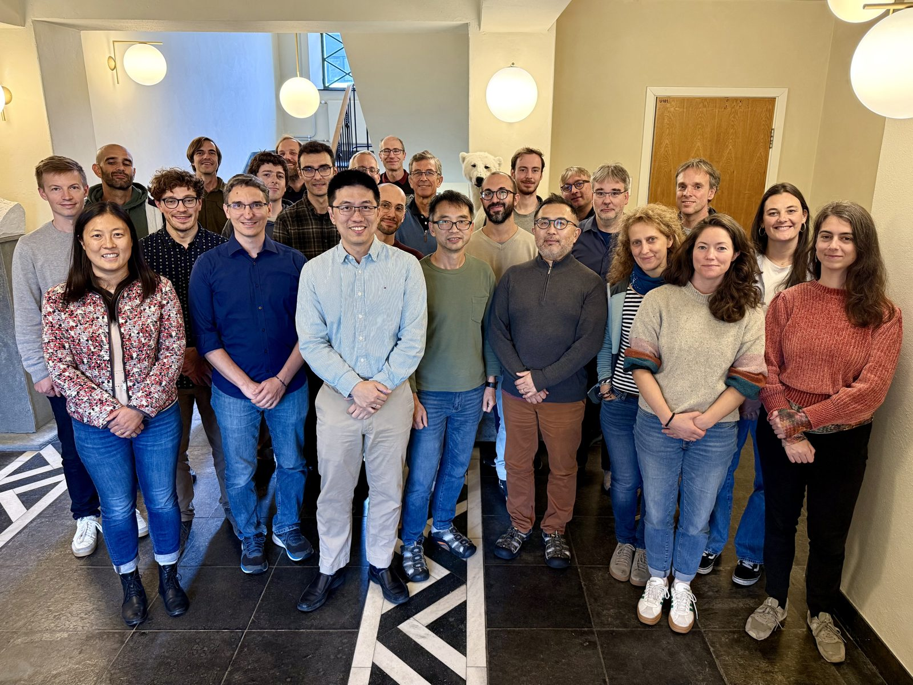
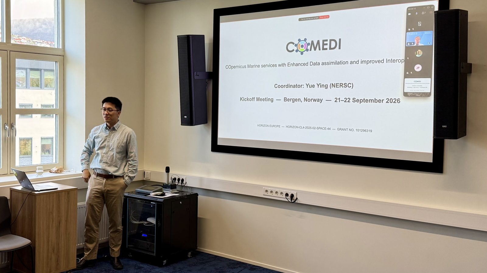
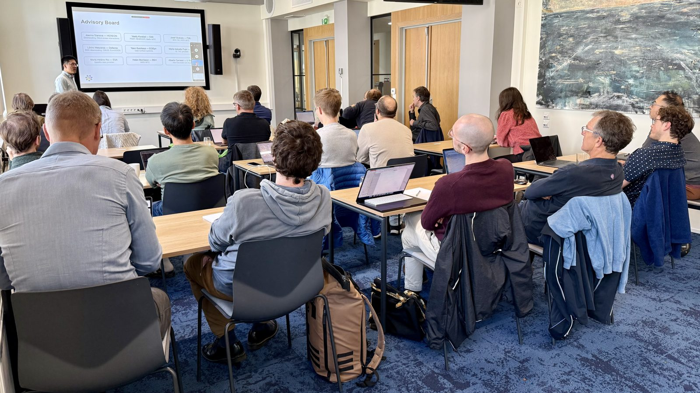

COMEDI held its kick-off meeting on 21–22 September 2026 at NERSC in Bergen, Norway. More than 40 people took part, in person and online, from all eleven partners, the advisory board and the European Health and Digital Executive Agency (HaDEA).

Over two days, the partners got to know each other, presented the planned work and its expected outcomes, and started the discussions on joint development. The sessions followed the project's four objectives: advancing data assimilation methods, making best use of new observations, improving interoperability, and preparing the innovations for operational use.

The three joint development teams, on AI methods, software and diagnostic protocols, held their first discussions. Among the first agreements, code delivered by the project will be published openly on Zenodo.

The next annual meeting will take place in September 2027.